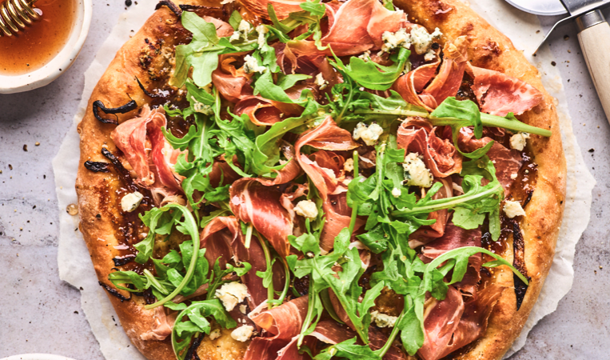

Fig and Ham Pizza

A Delicous Savory Treat
Indulge in a delightful combination of sweet and savory with my Ham and Fig pizza. This unique pizza features succulent slices of honey-cured ham, paired with juicy, fresh figs that add a natural sweetness to every bite. Topped with creamy mozzarella cheese and a drizzle of tangy balsamic glaze, this pizza is a true flavor explosion in your mouth.
Perfectly balanced with a crispy, thin crust, my Ham and Fig pizza is a must-try for anyone looking to experience the perfect harmony of contrasting flavors in one dish.
Ingredients
- 1/2lb homemade or store-bought pizza dough
- 1 Tablespoon plus 1 teaspoon olive oil
- 2 shallots
- 1 clove of garlic
- 1 teaspoon chopped fresh thyme
- 1/2 teaspoon salt
- 1/3 cup fig jam
- 1-1/2 oz. Gorgonzola
- 1 teaspoon fresh lemon juice
- 2 oz. baby arugula
- 2 oz. thinly sliced prosciutto di parma
- freshly ground black pepper
- 1/4 cup of hot honey
Steps
- Set a pizza stone in the oven and preheat the oven to 500°F. Do this 30 minutes prior to cooking the pizza.
- Heat 1 tablespoon of the oil in a medium skillet. Add the shallots, sprinkle with a pinch of salt, and cook over medium-low heat, stirring occasionally, until very soft and browned, approx 8-10 minutes. Stir in the garlic and the thyme cook for 30 more seconds then remove from heat.
- Make the pizza dough or if using store bought remove from fridge and let rest on a lightly floured surface while you prepare the toppings.
- Line pizza peel with parchment paper or sprinkle a little semolina or regular flour on it. If you don’t have a pizza peel, you can use the back of a rimmed baking sheet or a rimless baking sheet.
- With your fingers gently stretch press the dough into a circle stretching it as needed so that it’s 10-12 inches. Put it on the peel.
- Use the back of a spoon to spread the jam over the dough, leaving about a ½-inch border. Sprinkle the shallot garlic thyme mixture over the dough. Sprinkle the blue cheese over that.
- Transfer the pizza to the hot pizza stone (with the parchment, if using), and bake until the crust is golden brown and the cheese and jam are bubbling and hot, approx 6-8 minutes.
- Meanwhile, in a medium bowl, combine remaining oil and the lemon juice. And toss the arugula with it.
- Remove the cooked pizza from the oven. Lay the Prosciutto di Parma over it, and then top with the arugula. Drizzle with hot honey, and crumble on more cheese if you would like, slice, and serve.